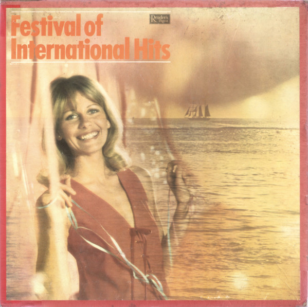

LP
Festival Of International Hits
Various
Format LP
Media: — · Sleeve: —
—
Personal
Discogs SuggestedCA$21.14
Discogs MedianCA$21.14
Discogs HighCA$21.14
- Physical Copy ID
- BB-LP-340
- Year
- 1969
- Label
- Reader's Digest
- Catalog #
- GFIH-10A
- Country
- Europe
- Genre / Style
- Jazz · Easy Listening, Latin Jazz, Bossa Nova